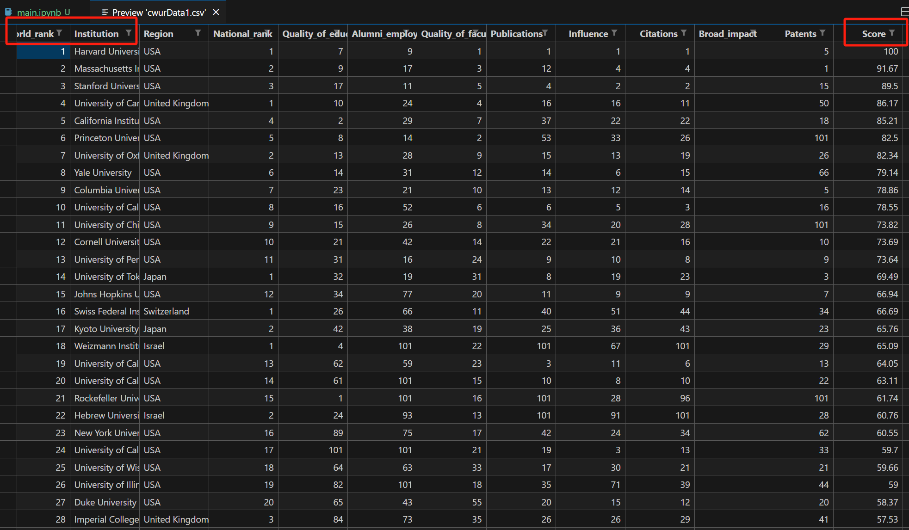
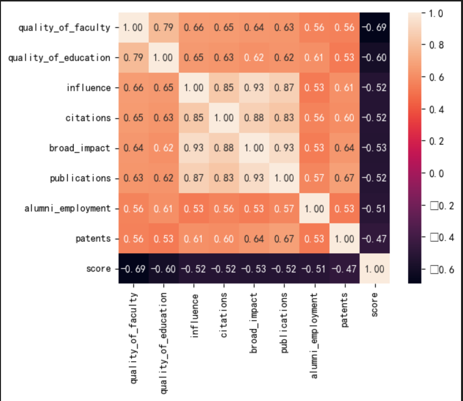

1 简介 1.1 背景简介 大学排名的问题具有显著的重要性，同时也充满了挑战和争议。一所大学的全方位能力包括科研、师资和学生等多个因素。在本项目中，我们将依据CWUR提供的全球知名大学的各项排名（包括师资和科研等）来进行工作。一方面，我们将通过数据可视化来探究各个大学的独特性。另一方面，我们希望利用机器学习模型（例如线性回归）来预测大学的综合得分。
源地址：https://gitlab.diantouedu.cn/QY/test1/tree/master/%E4%BA%BA%E5%B7%A5%E6%99%BA%E8%83%BD%E7%B3%BB%E7%BB%9F%E5%AE%9E%E6%88%98%E7%AC%AC%E4%B8%89%E6%9C%9F/%E5%AE%9E%E6%88%98%E4%BB%A3%E7%A0%81/%E6%9C%BA%E5%99%A8%E5%AD%A6%E4%B9%A0%E9%A1%B9%E7%9B%AE%E5%AE%9E%E6%88%98/%E5%9F%BA%E4%BA%8E%E5%9B%9E%E5%BD%92%E5%88%86%E6%9E%90%E7%9A%84%E5%A4%A7%E5%AD%A6%E7%BB%BC%E5%90%88%E5%BE%97%E5%88%86%E9%A2%84%E6%B5%8B
本文在原基础上，修改了缺失数据的处理方式，增加了岭回归、pca降维和tsne的降维效果。
所有可运行的代码，在我的仓库中，https://github.com/Guoxn1/ai。按照博客中文章的分类，可找到代码所在分支。
如果给到您帮助，请给我的仓库个star，这将助推我持续创作。
1.2 任务简介 基础任务（80分）：
1.观察和可视化数据，揭示数据的特性。
2.训练集和测试集应按照7:3的比例随机划分，采用RMSE（均方根误差）作为模型的评估标准，计算并获取测试集上的线性回归模型的RMSE值。
3.对线性回归模型中的系数进行分析。
4.尝试使用其他类型的回归模型，并比较其效果。
进阶任务（20分）：
1.尝试将地区的离散特征融入到线性回归模型中，然后比较并分析结果。
2.利用R2指标和VIF指标进行模型评价和特征筛选, 尝试是否可以增加模型精度。
1.3 数据简介 
这个数据，最左侧是大学的排名及大学的名称，最右侧是大学的得分数，并且从数据来看是从2012-2015年的数据。
2 数据预处理 2.1 去除异常数据和填充缺失数据 异常数据暂时没有看见，其实真没有。
缺失数据确实看到，在2012年和2013年的broad_impact是空的，我们试图用2014和2015年的数据对其填充，如果不存在，就设置为中值。
1 2 3 4 5 6 7 8 9 10 11 12 13 14 15 16 17 18 19 20 21 22 23 24 25 26 27 28 29 30 31 32 33 data = pd.read_csv("cwurData1.csv" )"year" ] == 2012 )][["institution" , "broad_impact" ]]"year" ] == 2013 )][["institution" , "broad_impact" ]]"year" ].isin([2014 , 2015 ]))][["institution" , "broad_impact" ]]for index1, row1 in board_2012.iterrows():if pd.isnull(row1["broad_impact" ]):for index2, row2 in board_2014_2015.iterrows():if row2["institution" ] == row1["institution" ]:"broad_impact" ] = row2["broad_impact" ]break else :pass if pd.isnull(board_2012.at[index1,"broad_impact" ]):"broad_impact" ].dropna())"broad_impact" ] = median_valuefor index1, row1 in board_2013.iterrows():if pd.isnull(row1["broad_impact" ]):for index2, row2 in board_2014_2015.iterrows():if row2["institution" ] == row1["institution" ]:"broad_impact" ] = row2["broad_impact" ]break else :pass if pd.isnull(board_2013.at[index1,"broad_impact" ]):"broad_impact" ].dropna())"broad_impact" ] = median_value
2.2 划分训测集和标准化数据 1 2 3 4 5 6 7 8 9 10 11 12 13 14 15 16 import matplotlib.pyplot as pltimport seaborn as sns'font.sans-serif' ] = ['SimHei' ]"score" ]'quality_of_faculty' , 'publications' , 'citations' , 'alumni_employment' ,'influence' , 'quality_of_education' , 'broad_impact' , 'patents' ]]0.3 , shuffle=True )
2.3 可视化展示数据 主要是计算变量之间的线性关系，为我们之后选择lasso线性回归提供依据。因为部分变量之间存在一些关系，所以之后考虑的时候就可以选择删除这些数据或者采用更优的办法。
1 2 3 4 5 6 7 8 9 10 11 'quality_of_faculty' , 'publications' , 'citations' , 'alumni_employment' ,'influence' , 'quality_of_education' , 'broad_impact' , 'patents' ,"score" ]].corr()9 ,"quality_of_faculty" )['quality_of_faculty' ].indexTrue ,annot=True ,square=True ,fmt=".2f" ,annot_kws={"size" :10 },yticklabels=cols.values,xticklabels=cols.values)

3 使用线性回归预测得分 这里我们使用评价指标rmse和r2指标，即平方根误差和决定系数。尝试使用不同的回归模型对数据进行分析。其中rmse越小越好，r2越接近1越好。
简单来讲，lasso回归适用于变量之间存在较少关系的，而岭回归偏向于变量之间存在共线性关系的。
3.1 线性回归 1 2 3 4 5 6 7 8 9 10 11 12 13 from sklearn.linear_model import LinearRegressionfrom sklearn.metrics import mean_squared_errorfrom sklearn.metrics import r2_scoreFalse )print (rmse)print (r2)print (line1.coef_)
输出如下：
6.062507041517643
0.5242305139015173
[-3.50585305 0.34820841 0.05744021 -1.02184516 0.42170002 -0.38606471 -1.41763572 -0.40082597]
3.2 lasso回归 1 2 3 4 5 6 7 8 9 10 from sklearn.linear_model import Lasso1 )False )print (la_rmse)print (lao_r2)
6.407601693598727
0.4685246976674987
模型的效果好像更差了，因为lasso回归更擅长解决非共线性问题，常用于找到更具代表性的特征。
3.3 岭回归 1 2 3 4 5 6 7 8 9 from sklearn.linear_model import Ridge1 )False )print (lin_rmse)print (r2)
输出：
6.063214490232219
0.5242305139015173
回比最初始的好一点，但是好不了太多，尝试提高模型质量。
4 提高模型预测质量 4.1 加入地区特征 从表里可以看出，usa地区的学校明显更偏向于排在前面，而亚洲地区的和其它地区的学校更偏向于被排到后面，所以考虑将地区因素加入进来。这里将计算每个地区学校排名的平均数，划分为三个等级。
1 2 3 4 5 6 7 8 9 10 11 12 13 14 15 16 17 18 19 20 21 22 features = data[['quality_of_faculty' , 'publications' , 'citations' , 'alumni_employment' , 'influence' , 'quality_of_education' , 'broad_impact' , 'patents' , 'region' ]]"region" ].unique()for place in places:"region" ]==place].indexif avg > 50 :1 elif avg > 45 :2 else :3 15 ))0.3 , shuffle=True )
1 2 3 4 5 6 7 8 9 10 11 12 13 14 15 16 17 18 19 20 21 22 23 24 25 26 27 28 29 30 line2 = LinearRegression()1 )1 )False )False )False )print ("------ line ------" )print (line2_rmse)print (line2_r2)print ("-------lasso --------" )print (lasso2_rmse)print (lasso_r2)print ("--------- ridge ------" )print (ridge2_rmse)print (ridge2_r2)
输出:
1 2 3 4 5 6 7 8 9 ------ line ------
显然，加入地区因素是有所提升的。
4.2 使用VIF指标剔除共线性变量 1 2 3 4 5 6 7 8 9 VIF（Variance Inflation Factor）是用于评估线性回归模型中自变量之间多重共线性（multicollinearity）程度的统计指标。多重共线性指的是自变量之间存在高度相关性，可能导致模型的解释能力下降或不可靠的参数估计。
我们的数据存在共线性问题，即一个变量对另一个变量有影响。
本质上，解决方法1和2相似，都是删除一个留下另一个，建议就是删除vif高的值。
VIF（方差膨胀因子）是用于评估自变量之间共线性程度的指标。它可以通过以下数学表达式计算：
对于线性回归模型中的每个自变量（特征）X_i，VIF 的计算方式如下：
VIF(X_i) = 1 / (1 - R_i^2)
其中，R_i^2 是通过将 X_i 作为因变量，使用其他自变量来拟合回归模型得到的决定系数（R^2）。
4.2.1 删除vif高的值 常见的阈值为 5 或 10，当 VIF 值超过这个阈值时，可以认为存在较高的共线性。
1 2 3 4 5 6 7 8 9 10 11 12 13 14 15 16 17 18 19 20 21 22 23 24 25 26 27 28 29 30 31 32 33 34 35 36 37 'broad_impact' , 'publications' ])0.3 , shuffle=True )False )False )False )print ("------ line ------" )print (line2_rmse)print (line2_r2)print ("-------lasso --------" )print (lasso2_rmse)print (lasso_r2)print ("--------- ridge ------" )print (ridge2_rmse)print (ridge2_r2)
输出：
1 2 3 4 5 6 7 8 9 10 11 12 13 14 15 16 17 18 features VIF_ of_ faculty 3.041690_ employment 1.823623_ of_ education 3.072823
4.2.2 pca降维 1 2 3 4 5 6 7 8 9 10 11 12 13 14 15 16 17 18 19 20 21 22 23 24 25 26 27 28 29 30 31 32 33 34 35 36 37 from sklearn.decomposition import PCA0.98 )print (reduced.shape)0.3 , shuffle=True )False )False )False )print ("------ line ------" )print (line2_rmse)print (line2_r2)print ("-------lasso --------" )print (lasso2_rmse)print (lasso_r2)print ("--------- ridge ------" )print (ridge2_rmse)print (ridge2_r2)
输出：
1 2 3 4 5 6 7 8 9 10 (2200 , 6 )4.8823157878149175 0.45271279262238207 5.0973879270658635 0.40343339763507935 4.881904035006545 0.4528051002698318
有概率变成4.9多的，降维也可以提高一点点性能。
4.2.3 tsne降维 再看一下tsne的降维效果。
1 2 3 4 5 6 7 8 9 10 11 12 13 14 15 16 17 18 19 20 21 22 23 24 25 26 27 28 29 30 31 32 33 34 35 36 from sklearn.manifold import TSNE3 )print (reduced1.shape)0.3 , shuffle=True )False )False )False )print ("------ line ------" )print (line2_rmse)print (line2_r2)print ("-------lasso --------" )print (lasso2_rmse)print (lasso_r2)print ("--------- ridge ------" )print (ridge2_rmse)print (ridge2_r2)
输出：
1 2 3 4 5 6 7 8 9 10 (2200, 3)
并不理想，猜测可能是变量之间更偏向于存在线性关系。所以这种情况下降维还是用pca。
如果这篇博客给到您帮助，我希望您能给我的仓库点一个star，这将是我继续创作下去的动力。
我的仓库地址，https://github.com/Guoxn1?tab=repositories